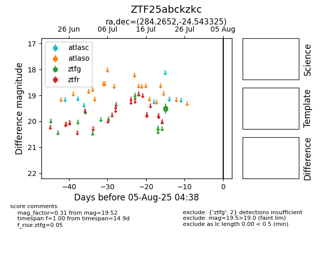

Target ZTF25abckzkc at 2025-08-05 04:38, see:
FINK: fink-portal.org/ZTF25abckzkc
Lasair: lasair-ztf.lsst.ac.uk/objects/ZTF25abckzkc
ALeRCE: alerce.online/object/ZTF25abckzkc
alt names
ZTF25abckzkc (ztf,fink)
coordinates:
equatorial (ra, dec) = (284.2652,-24.54332)
galactic (l, b) = (11.3612,-12.07943)
photometry
last ztfg=19.52
2 ztfg detections
